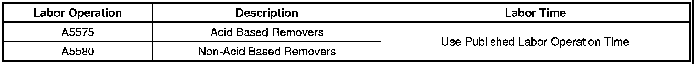
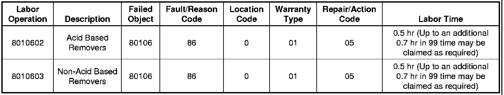

Body - Bumps or Rust Colored Spots in Paint
TECHNICALBulletin No.: 05-08-51-008C
Date: June 22, 2009
Subject: Bumps or Rust Colored Spots in Paint Due to Rail or Iron Dust (Remove Rail Dust)
Models:
1994-2010 GM Passenger Cars and Trucks (Including Saturn)
2003-2010 HUMMER H2
2006-2010 HUMMER H3
2005-2009 Saab 9-7X
Supercede:
This bulletin is being revised to add model years. Please discard Corporate Bulletin Number 05-08-51-008B (Section 08 - Body and Accessories).
Condition
Visible rust colored spots or bumps on a vehicle's paint surface from rail or iron dust.
Cause
Rail dust comes from tiny iron particles produced from the friction between train wheels and the tracks and gets deposited on the vehicle surfaces. Iron dust can get deposited on the surface if the vehicle is stored near any operation producing iron dust such as an iron ore yard. Either material can lay on top of, or become embedded in, the paint surface.
Correction
Because the severity of the condition varies, proper diagnosis of the damage is critical to the success of repairs. Diagnosis should be performed on horizontal surfaces (hood, roof, deck lid, pick up box, etc.) after the vehicle has been properly cleaned. There are two types of repair materials recommended to repair rail dust or iron dust:
1. GEL TYPE OXALIC ACID:
- Has the characteristics of the liquid type oxalic acid but stays where you put it because of its gel consistency.
2. CLAY TYPE NON-ACID BASED:
- Requires surface lubricant during use.
- Has different grades available.
Caution
Rail dust remover (Oxalic Acid) is an acidic substance containing chemicals that will break down the iron particles embedded in the finish. When working with rail dust remover, use the necessary safety equipment, including gloves and goggles. Follow the chemical manufacturer's directions closely because it may require special handling and disposal.
If, upon inspection, some particles are still present, the various chemical manufacturer's processes can be repeated.
After the removal process, small pits may remain in the clearcoat and can be corrected, in most cases, with a finesse/polish operation.
Procedure
1. Move the vehicle to a cool shaded area and make sure that the vehicle surfaces are cool during the removal process. DO NOT PERFORM THE REMOVAL PROCESS IN DIRECT SUNLIGHT OR ON A VEHICLE WITH HOT OR WARM BODY PANELS.
2. Wash the vehicle with soap and water. Dry it immediately and clean the affected areas with a wax and grease remover.
3. Perform the removal process according to the chemical manufacturer's directions.
Once the damage has been repaired, the final step involves a polishing process.
Rail Dust Remover Manufacturers
Use the chemical manufacturers listed below, or equivalent:
Auto Magic(R) or Clay Magic(R) products available from:
Auto Wax Company, Inc.
1275 Round Table Dr.
Dallas, TX 75247
(800) 826-0828 (Toll-Free) or (214) 631-4000 (Local)
Fax (214) 634-1342
www.automagic.com
info@autowaxcompany.com
E038 Fallout Gel or E038E Liquid Fallout Remover II available from:
Valvoline Car Brite Company
1910 South State Avenue
Indianapolis, In 46203
(800) 347-2439 (Toll Free) or (317) 788-9925 (Local)
Fax (317) 788-9930
www.carbrite.com
info@carbrite.com
*We believe these sources and their products to be reliable. There may be additional manufacturers of such products. General Motors does not endorse, indicate any preference for or assume any responsibility for the products from these firms or for any such items which may be available from other sources.
If rail dust remover is not available in your area, call one of the numbers listed above for a distributor near your location.
Warranty Information (excluding Saab U.S. Models)
Important
Refer to the Policy & Procedures Manual, section 1.2.1.7 for detailed information regarding warranty coverage for this condition.

Important
In certain cases where the vehicle finish is severely damaged and the actual repair time exceeds the published time, the additional time should be submitted in the "Other Labor Hours" field.

Warranty Information (Saab U.S. Models)

Disclaimer